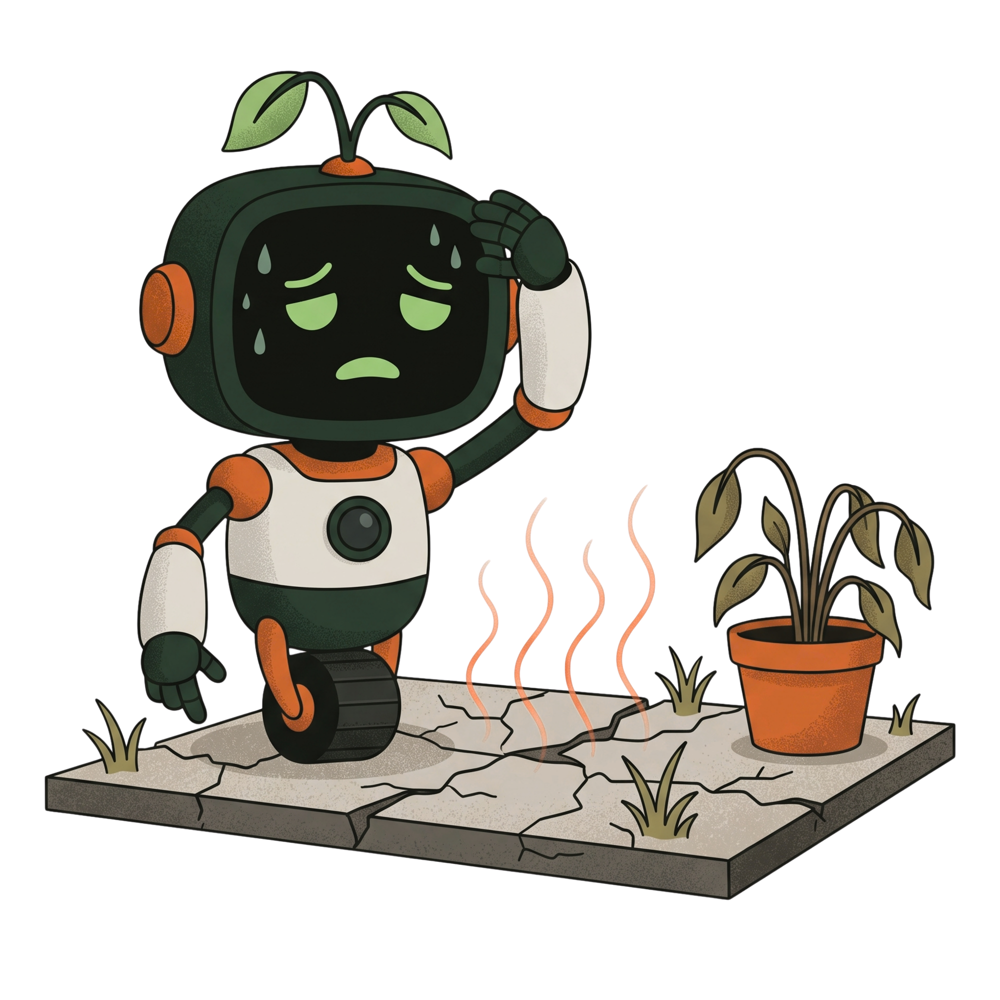
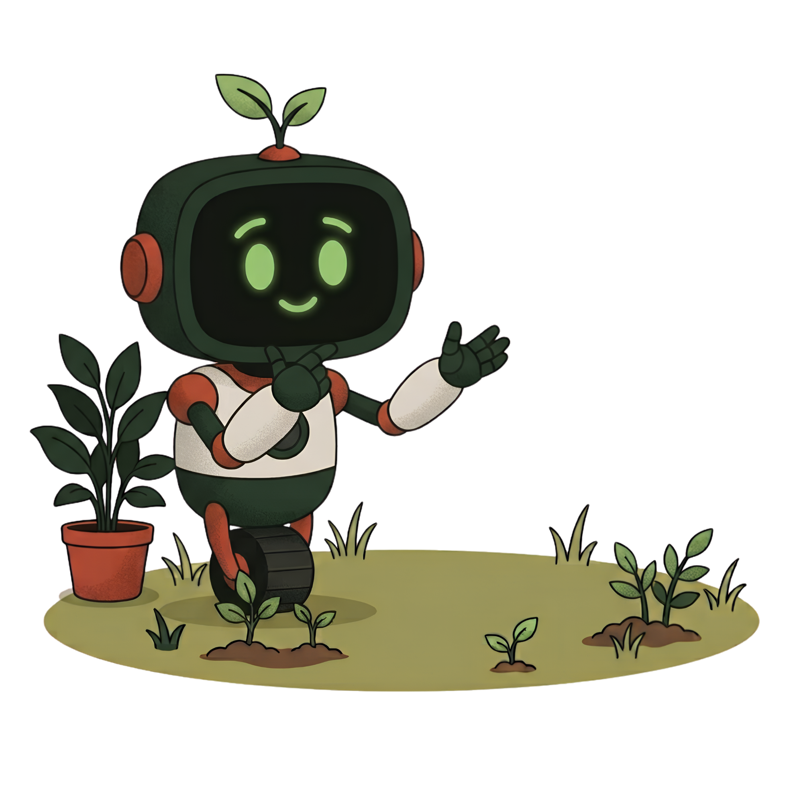

Dulu teras depan panasnya bisa tembus 38 derajat di siang hari. Setelah cek peta Teduh dan tanam bibit Tanjung berakar tunggang, teras jadi adem dan pipa got tetap aman tanpa retak.
Wujudkan Kawasan
yang Sejuk
Bebas dari Gerah.
Teduh hadir untuk membantu Anda memetakan suhu lingkungan, memilih pohon peneduh yang aman, dan mewujudkan kawasan yang lebih sejuk setiap hari.
Cek Suhu Lingkungan

.webp)
 +2.4K Kawasan Terpetakan
+2.4K Kawasan Terpetakan
+2.4K Kawasan Terpetakan
Mengapa Halaman Semen
Bikin Rumah Makin Panas?
Semen dan aspal menyerap panas sepanjang siang, lalu memantulkan hawa gerah langsung ke dinding dan ruangan rumah Anda.

Panas Tersimpan Sampai Malam
Lantai semen menyerap terik hingga 39.4°C dan terus memancarkan hawa gerah ke dalam rumah sampai malam hari.
Khawatir Akar Merusak Pipa & Keramik
Banyak warga ragu menanam pohon karena takut akarnya membongkar lantai teras atau menyumbat saluran pipa got.
Tagihan Listrik AC Membengkak
Dinding rumah yang panas membuat pendingin ruangan (AC) harus bekerja lebih keras dan boros daya listrik.
Bingung Memilih Bibit yang Pas
Belum ada panduan praktis untuk memilih jenis pohon rindang yang tetap aman ditanam di lahan teras sempit.
Langkah Mudah Bikin
Rumah Lebih Adem
Peta Titik Panas & Satelit
Lihat titik panas atap dan halaman sekitar rumah Anda lewat peta satelit yang jelas dan mudah dipahami.
Pilihan Pohon Berakar Aman
Rekomendasi bibit pohon berakar lurus ke bawah yang aman dari pipa got dan tidak merusak keramik teras.
Simulasi Penurunan Suhu
Hitung perkiraan suhu yang turun hingga 6.8°C saat pohon mulai rimbun menaungi teras rumah Anda.
Panduan Jarak Tanam Aman
Ketahui jarak tanam yang pas (1.5 sampai 3 meter) dari tembok rumah, saluran got, dan kabel listrik.
Cerita Warga yang
Pekarangannya Jadi Sejuk
Pertanyaan yang
Sering Ditanyakan

01
Kenapa pohon berakar tunggang aman untuk fondasi rumah?
Akar tunggang tumbuh lurus ke bawah ke dalam tanah untuk mencari air, bukan merambat ke samping seperti akar serabut yang sering membongkar keramik teras.
02
Bagaimana cara Teduh menghitung suhu pekarangan?
Teduh menghitung pantulan panas dari semen, aspal, dan atap, lalu memadukannya dengan rimbunnya pohon pada peta satelit.
03
Apakah pohon peneduh ini sulit dirawat?
Tidak. Pohon pilihan Teduh seperti Tanjung dan Tabebuia tahan panas terik, tidak mudah rontok, dan tidak perlu disiram tiap hari setelah tumbuh kuat.
04
Berapa jarak tanam yang aman dari pipa got dan tembok?
Beri jarak minimal 1.5 meter untuk pohon bertajuk sedang (seperti Tabebuia), dan 2.5 sampai 3 meter untuk pohon berdaun lebar (seperti Tanjung atau Ketapang Kencana).
05
Apakah platform ini bisa dipakai gratis?
Ya, semua fitur peta suhu, simulasi peneduh, dan panduan bibit pohon bisa langsung dipakai gratis tanpa perlu daftar akun.
Siap Bikin Rumah
Anda Lebih Adem?
+
Pindai titik panas halaman rumah Anda dan temukan pohon peneduh yang ramah fondasi untuk hunian yang asri dan hemat listrik.